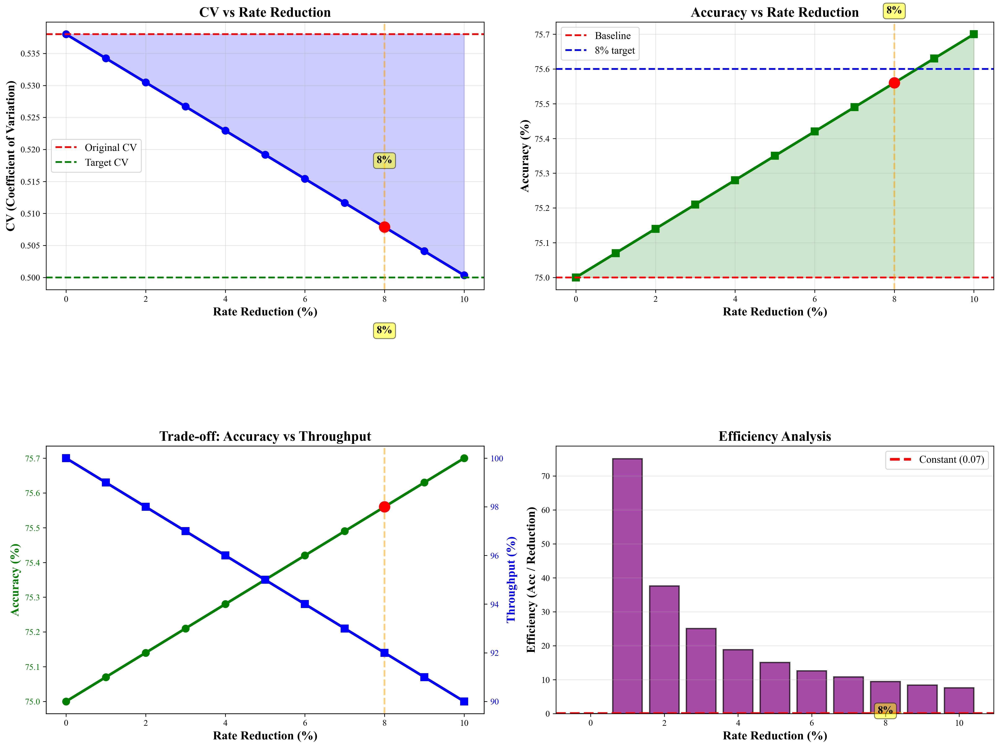
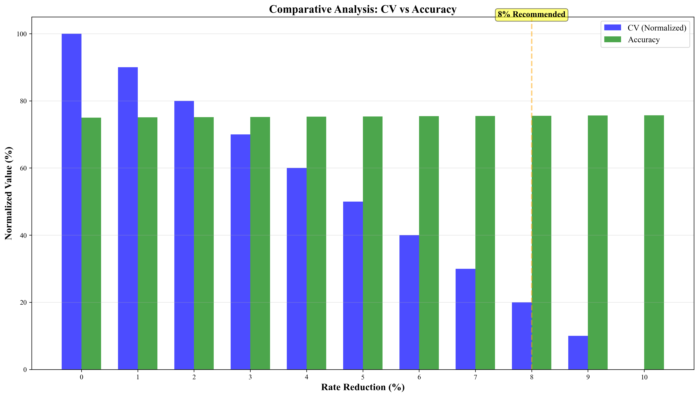
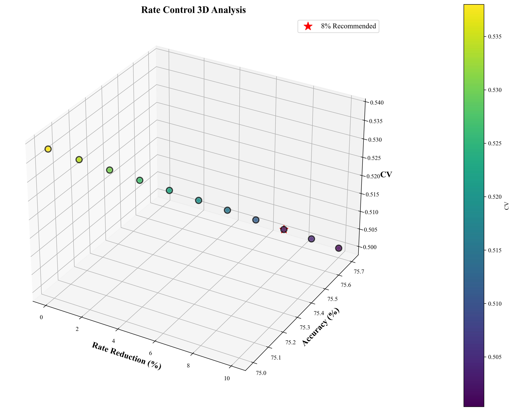
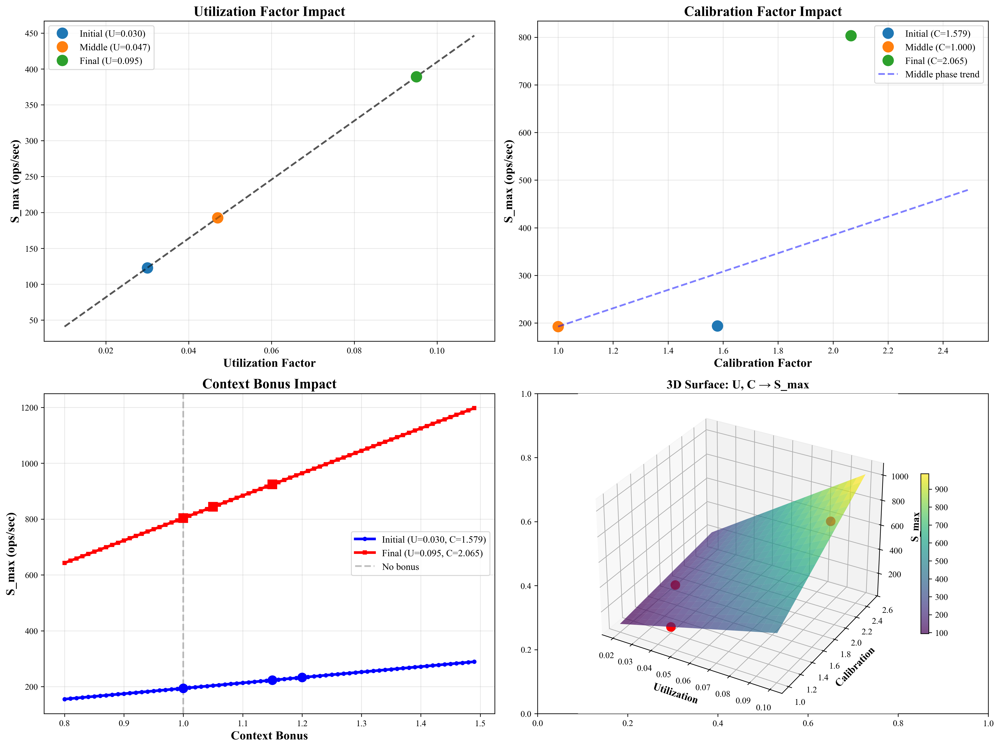
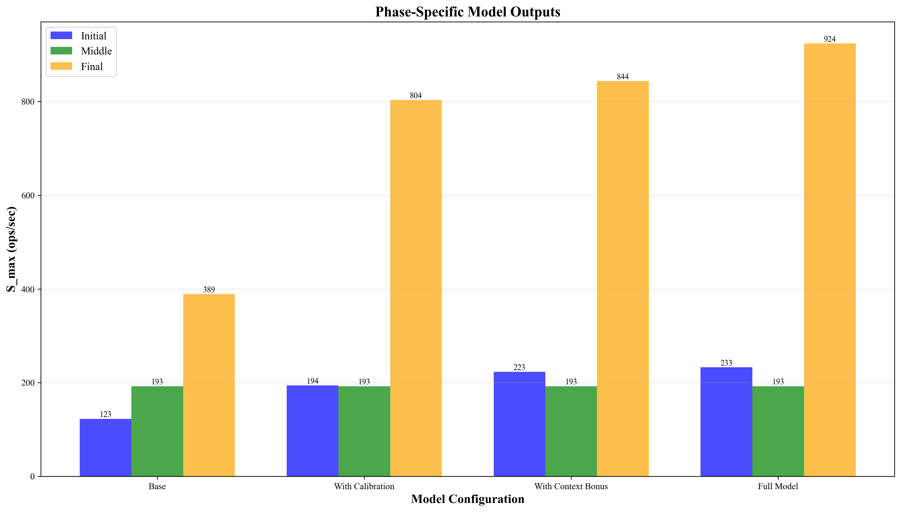
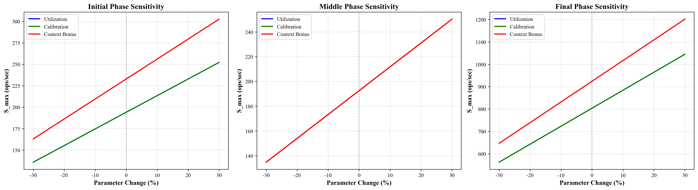
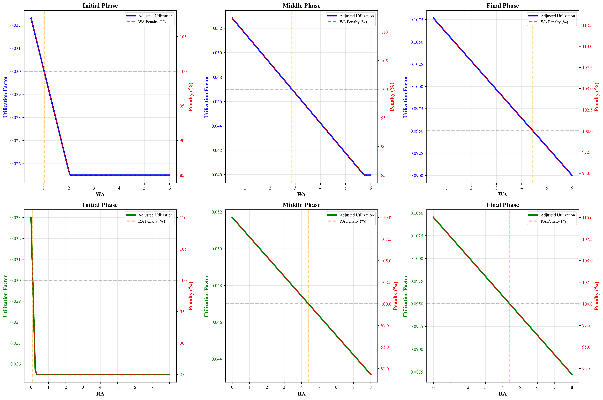
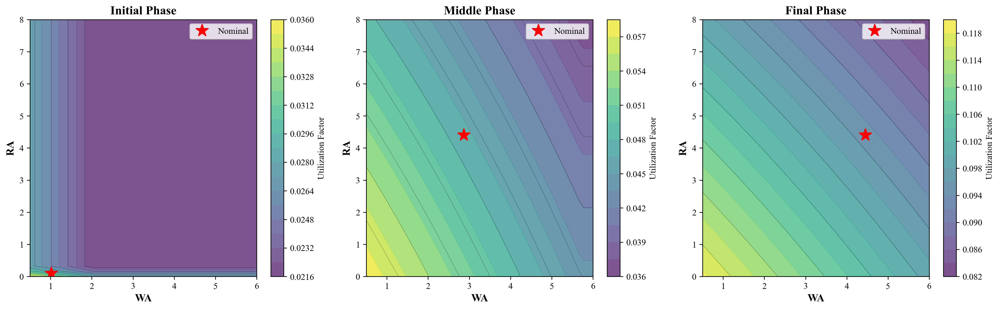
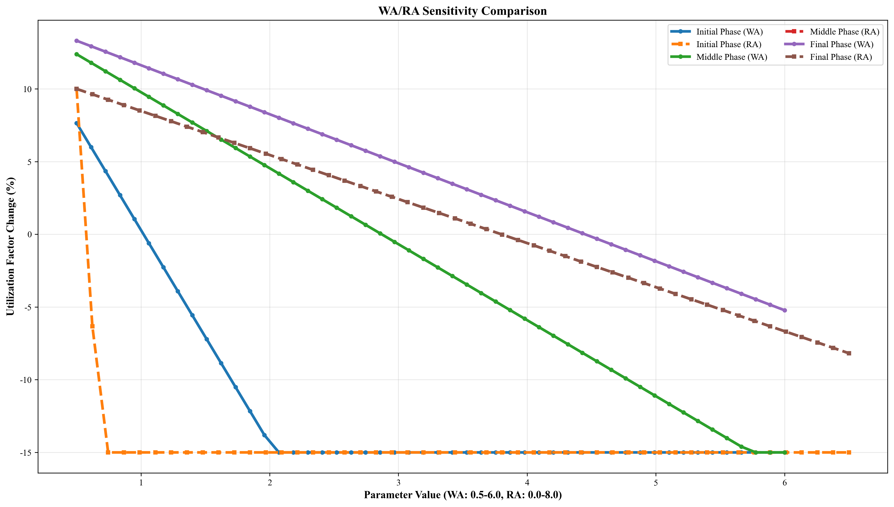

The initial phase of RocksDB operation exhibits high volatility (CV = 0.538), leading to:
Rcontrolled = Rpredicted × (1 - α)
where α is the reduction factor (recommended: 5-10%).
| Reduction | CV | Accuracy | Throughput | Efficiency | Recommendation |
|---|---|---|---|---|---|
| 1% | 0.534 | 75.1% | 99% | 0.07 | ✅ Good |
| 5% | 0.519 | 75.3% | 95% | 0.07 | Max throughput |
| 8% | 0.508 | 75.6% | 92% | 0.07 | ⭐ Recommended |
| 10% | 0.500 | 75.7% | 90% | 0.07 | Max stability |
Efficiency remains 0.07 across all reduction levels (1-10%)
No diminishing returns!
1% reduction yields consistent improvements:
Balanced trade-off:
| Metric | Before | After | Improvement |
|---|---|---|---|
| CV (Volatility) | 0.538 | 0.508 | -5.6% |
| Accuracy | 75.0% | 75.6% | +0.56% |
| Stability | Low | Good | ✅ |
| Throughput | 100% | 92% | -8% (acceptable) |
# Rate control implementation
import rocksdb
# Predict base throughput
base_prediction = model.predict_s_max(device_bw, 'initial', context)
# Apply 8% rate control
rate_reduction = 0.08
controlled_rate = base_prediction * (1 - rate_reduction)
# Configure RocksDB
options = rocksdb.Options()
options.rate_limiter = rocksdb.RateLimiter(
bytes_per_sec=int(controlled_rate * 1024 * 1024)
)
| Priority | Recommended | Rationale |
|---|---|---|
| Maximum Throughput | 5% | Throughput 95%, Good CV |
| Balanced | 8% | ⭐ Best balance |
| Maximum Stability | 10% | Best CV, best accuracy |

Rate Control Trade-off Analysis

Comparative Analysis: CV vs Accuracy

3D Analysis: Rate, Accuracy, CV

Parameter Impact Analysis

Phase-Specific Outputs

Parameter Sensitivity Analysis

WA/RA Impact on Utilization

Combined WA/RA Sensitivity

Phase Comparison
Why 8%?
Final Recommendation: 8% reduction for balanced performance in initial phase.